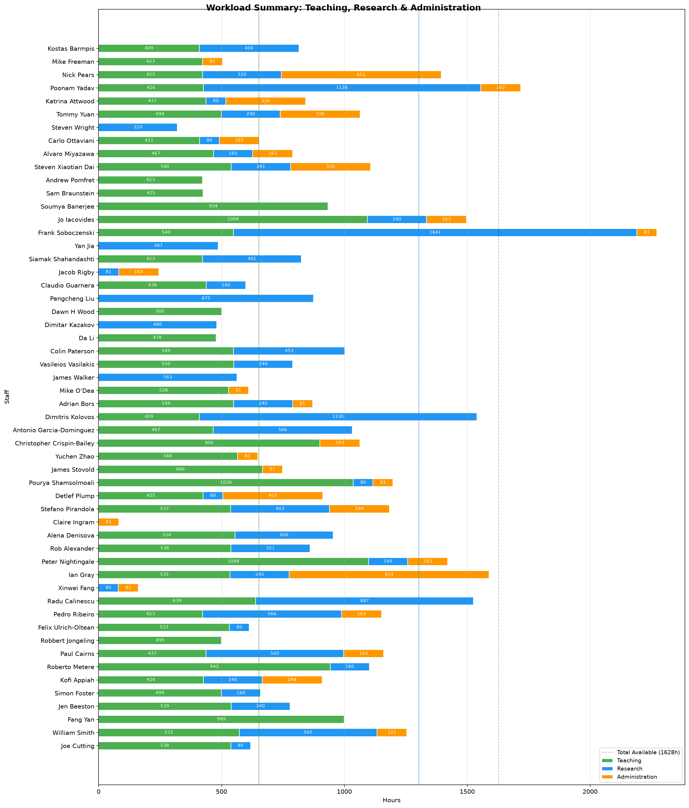
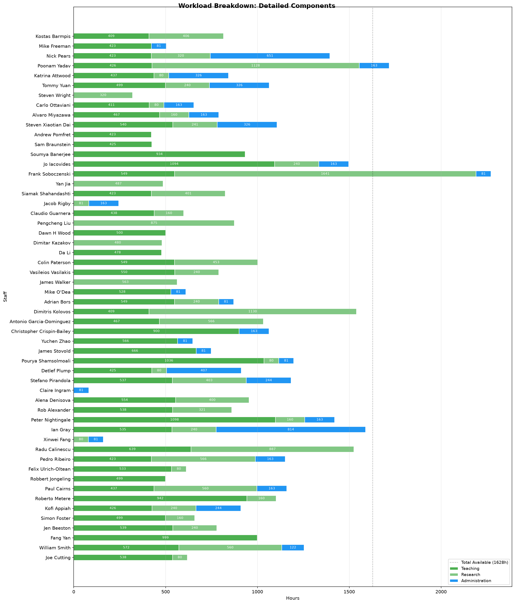

Generated for academic year


| Name | FTE | Total | Teaching | Research | Admin | Teaching Detail | Research Detail | Admin Detail |
|---|---|---|---|---|---|---|---|---|
| Joe Cutting | 1.00 | 618.0 | 538.0 | 80.0 | 0.0 | PRAD (20cr): Standard multiplier (2.5x) applied to 20 contact hours; 1 assessmen... | PhD primary supervisor: 1 x 80h = 80.0h... | ECR rep: 0% of 1628h = 0.0h... |
| William Smith | 1.00 | 1254.6 | 572.5 | 560.0 | 122.1 | ROCS (20cr): Standard multiplier (2.5x) applied to 20 contact hours; 2 assessmen... | PhD primary supervisor: 7 x 80h = 560.0h... | Director of Admissions: 5% of 1628h = 81.4h; Internally Distributed Funding pane... |
| Fang Yan | 1.00 | 999.1 | 999.1 | 0.0 | 0.0 | SOF2 (20cr): New lecturer multiplier (7.5x) applied to 20 contact hours; 2 asses... | No research activities recorded... | No administrative roles... |
| Jen Beeston | 1.00 | 779.0 | 539.0 | 240.0 | 0.0 | TECC (20cr): Standard multiplier (2.5x) applied to 20 contact hours; 1 assessmen... | PhD primary supervisor: 3 x 80h = 240.0h... | Chair of the Department Education Committee: 0% of 1628h = 0.0h... |
| Simon Foster | 1.00 | 659.1 | 499.1 | 160.0 | 0.0 | THE3 (20cr): New lecturer multiplier (7.5x) applied to 20 contact hours; 2 asses... | PhD primary supervisor: 2 x 80h = 160.0h... | No administrative roles... |
| Kofi Appiah | 1.00 | 910.1 | 425.9 | 240.0 | 244.2 | SOF1 (20cr): Standard multiplier (2.5x) applied to 20 contact hours; 1 assessmen... | PhD primary supervisor: 3 x 80h = 240.0h... | Deputy Director of Admissions (UG Admissions): 15% of 1628h = 244.2h... |
| Roberto Metere | 1.00 | 1102.3 | 942.3 | 160.0 | 0.0 | CTAP (20cr): Standard multiplier (2.5x) applied to 20 contact hours; 1 assessmen... | PhD primary supervisor: 2 x 80h = 160.0h... | StAMP committee members: 0% of 1628h = 0.0h... |
| Paul Cairns | 1.00 | 1159.9 | 437.1 | 560.0 | 162.8 | HCIN (20cr): Standard multiplier (2.5x) applied to 20 contact hours; 2 assessmen... | PhD primary supervisor: 7 x 80h = 560.0h; Grant 4962938: 0% of 1628h = 0.0h (BiB... | Other PLs: 5% of 1628h = 81.4h; REF Lead: 5% of 1628h = 81.4h... |
| Robbert Jongeling | 1.00 | 499.2 | 499.2 | 0.0 | 0.0 | ENG1 (20cr): New lecturer multiplier (7.5x) applied to 20 contact hours; 2 asses... | No research activities recorded... | No administrative roles... |
| Felix Ulrich-Oltean | 1.00 | 612.8 | 532.8 | 80.0 | 0.0 | SAIL (20cr): Standard multiplier (2.5x) applied to 20 contact hours; 1 assessmen... | PhD primary supervisor: 1 x 80h = 80.0h... | No administrative roles... |
| Pedro Ribeiro | 1.00 | 1151.6 | 423.2 | 565.6 | 162.8 | SYS1 (20cr): Standard multiplier (2.5x) applied to 20 contact hours; 1 assessmen... | PhD primary supervisor: 3 x 80h = 240.0h; Grant 5042890: 20% of 1628h = 325.6h (... | Progression Panel: 10% of 1628h = 162.8h... |
| Radu Calinescu | 1.00 | 1525.8 | 638.8 | 887.0 | 0.0 | GPIG (40cr): Standard multiplier (2.5x) applied to 40 contact hours; 3 assessmen... | PhD primary supervisor: 6 x 80h = 480.0h; Grant 5876296: 10% of 1628h = 162.8h (... | No administrative roles... |
| Xinwei Fang | 1.00 | 161.4 | 0.0 | 80.0 | 81.4 | No teaching activities... | PhD primary supervisor: 1 x 80h = 80.0h... | Other PLs: 5% of 1628h = 81.4h... |
| Ian Gray | 1.00 | 1589.2 | 535.2 | 240.0 | 814.0 | EMBS (20cr): Standard multiplier (2.5x) applied to 20 contact hours; 1 assessmen... | PhD primary supervisor: 3 x 80h = 240.0h... | Deputy Head of Department (On-campus teaching): 50% of 1628h = 814.0h... |
| Peter Nightingale | 1.00 | 1420.8 | 1098.0 | 160.0 | 162.8 | FOAM (20cr): Standard multiplier (2.5x) applied to 20 contact hours; 1 assessmen... | PhD primary supervisor: 2 x 80h = 160.0h... | UG PL: 10% of 1628h = 162.8h... |
| Rob Alexander | 1.00 | 859.9 | 538.5 | 321.4 | 0.0 | HINT (20cr): Standard multiplier (2.5x) applied to 20 contact hours; 1 assessmen... | PhD primary supervisor: 3 x 80h = 240.0h; Grant 3874036: 5% of 1628h = 81.4h (Th... | StAMP committee members: 0% of 1628h = 0.0h... |
| Alena Denisova | 1.00 | 954.5 | 554.5 | 400.0 | 0.0 | IDEV (20cr): Standard multiplier (2.5x) applied to 20 contact hours; 2 assessmen... | PhD primary supervisor: 5 x 80h = 400.0h... | Ethics Committee Chair: 0% of 1628h = 0.0h... |
| Claire Ingram | 1.00 | 81.4 | 0.0 | 0.0 | 81.4 | No teaching activities... | No research activities recorded... | Outreach and Extra-Curricular Activities: 5% of 1628h = 81.4h... |
| Stefano Pirandola | 1.00 | 1183.8 | 536.8 | 402.8 | 244.2 | QUCO (20cr): Standard multiplier (2.5x) applied to 20 contact hours; 1 assessmen... | PhD primary supervisor: 3 x 80h = 240.0h; Grant 3984461: 10% of 1628h = 162.8h (... | Progression Panel Chair: 15% of 1628h = 244.2h... |
| Detlef Plump | 1.00 | 912.4 | 425.4 | 80.0 | 407.0 | THE2 (20cr): Standard multiplier (2.5x) applied to 20 contact hours; 1 assessmen... | PhD primary supervisor: 1 x 80h = 80.0h... | EC Officer (on-campus): 15% of 1628h = 244.2h; UG PL: 10% of 1628h = 162.8h... |
| Pourya Shamsolmoali | 1.00 | 1197.9 | 1036.5 | 80.0 | 81.4 | IMLO (20cr): Standard multiplier (2.5x) applied to 20 contact hours; 2 assessmen... | PhD primary supervisor: 1 x 80h = 80.0h... | Other PLs: 5% of 1628h = 81.4h... |
| James Stovold | 1.00 | 747.9 | 666.5 | 0.0 | 81.4 | DEEP (20cr): New lecturer multiplier (7.5x) applied to 20 contact hours; 1 asses... | No research activities recorded... | Academic Admissions Team: 5% of 1628h = 81.4h... |
| Yuchen Zhao | 1.00 | 647.4 | 566.0 | 0.0 | 81.4 | EHAC (20cr): Standard multiplier (2.5x) applied to 20 contact hours; 2 assessmen... | No research activities recorded... | Other PLs: 5% of 1628h = 81.4h... |
| Christopher Crispin-Bailey | 1.00 | 1063.3 | 900.5 | 0.0 | 162.8 | SYS2 (20cr): Standard multiplier (2.5x) applied to 20 contact hours; 1 assessmen... | No research activities recorded... | GTA Coordinator: 10% of 1628h = 162.8h... |
| Antonio Garcia-Dominguez | 1.00 | 1032.3 | 466.8 | 565.6 | 0.0 | ELLA (20cr): New lecturer multiplier (7.5x) applied to 20 contact hours; 1 asses... | PhD primary supervisor: 3 x 80h = 240.0h; Grant 4792719: 10% of 1628h = 162.8h (... | No administrative roles... |
| Dimitris Kolovos | 1.00 | 1539.1 | 409.2 | 1129.8 | 0.0 | ENG2 (20cr): Standard multiplier (2.5x) applied to 20 contact hours; 1 assessmen... | PhD primary supervisor: 7 x 80h = 560.0h; Grant 3275903: 5% of 1628h = 81.4h (So... | No administrative roles... |
| Adrian Bors | 1.00 | 870.4 | 549.0 | 240.0 | 81.4 | NLPG (20cr): Standard multiplier (2.5x) applied to 20 contact hours; 1 assessmen... | PhD primary supervisor: 3 x 80h = 240.0h... | Internationalisation and Visitors Coordinator: 5% of 1628h = 81.4h... |
| Mike O'Dea | 1.00 | 609.9 | 528.5 | 0.0 | 81.4 | GODS (20cr): Standard multiplier (2.5x) applied to 20 contact hours; 1 assessmen... | No research activities recorded... | Other PLs: 5% of 1628h = 81.4h... |
| James Walker | 1.00 | 562.8 | 0.0 | 562.8 | 0.0 | No teaching activities... | PhD primary supervisor: 5 x 80h = 400.0h; Grant 4822585: 10% of 1628h = 162.8h (... | No administrative roles... |
| Vasileios Vasilakis | 1.00 | 789.8 | 549.8 | 240.0 | 0.0 | NETS (20cr): Standard multiplier (2.5x) applied to 20 contact hours; 1 assessmen... | PhD primary supervisor: 3 x 80h = 240.0h... | No administrative roles... |
| Colin Paterson | 1.00 | 1002.0 | 549.0 | 453.0 | 0.0 | LPTC (20cr): Standard multiplier (2.5x) applied to 20 contact hours; 1 assessmen... | PhD primary supervisor: 2 x 80h = 160.0h; Grant 4717588: 3% of 1628h = 48.8h (KT... | No administrative roles... |
| Da Li | 1.00 | 477.7 | 477.7 | 0.0 | 0.0 | SYS3 (20cr): New lecturer multiplier (7.5x) applied to 20 contact hours; 1 asses... | No research activities recorded... | No administrative roles... |
| Dimitar Kazakov | 1.00 | 480.0 | 0.0 | 480.0 | 0.0 | No teaching activities... | PhD primary supervisor: 6 x 80h = 480.0h... | Ethics Committee members: 0% of 1628h = 0.0h... |
| Dawn H Wood | 1.00 | 500.0 | 500.0 | 0.0 | 0.0 | SOF2 (20cr): New lecturer multiplier (7.5x) applied to 20 contact hours; 2 asses... | No research activities recorded... | No administrative roles... |
| Pengcheng Liu | 1.00 | 874.9 | 0.0 | 874.9 | 0.0 | No teaching activities... | PhD primary supervisor: 3 x 80h = 240.0h; Grant 3450885: 20% of 1628h = 325.6h (... | Graduate School Board (GSB) Chair: 0% of 1628h = 0.0h... |
| Claudio Guarnera | 1.00 | 598.5 | 438.5 | 160.0 | 0.0 | IMLO (20cr): Standard multiplier (2.5x) applied to 20 contact hours; 2 assessmen... | PhD primary supervisor: 2 x 80h = 160.0h... | No administrative roles... |
| Jacob Rigby | 1.00 | 244.2 | 0.0 | 81.4 | 162.8 | No teaching activities... | Grant 5041144: 5% of 1628h = 81.4h (EPSRC: Addressing environmental injustices t... | Taught Project Coordinator: 10% of 1628h = 162.8h... |
| Siamak Shahandashti | 1.00 | 824.5 | 423.1 | 401.4 | 0.0 | THE1 (20cr): Standard multiplier (2.5x) applied to 20 contact hours; 1 assessmen... | PhD primary supervisor: 4 x 80h = 320.0h; Grant 4748293: 5% of 1628h = 81.4h (Pa... | No administrative roles... |
| Yan Jia | 1.00 | 487.0 | 0.0 | 487.0 | 0.0 | No teaching activities; Also teaches: Foundations of Safe AI (Safe AI 1), Design... | PhD primary supervisor: 1 x 80h = 80.0h; Grant 4698151: 10% of 1628h = 162.8h (E... | No administrative roles... |
| Frank Soboczenski | 1.00 | 2271.9 | 549.0 | 1641.5 | 81.4 | LLMA (20cr): Standard multiplier (2.5x) applied to 20 contact hours; 1 assessmen... | PhD primary supervisor: 2 x 80h = 160.0h; Grant 5042890: 11% of 1628h = 179.1h (... | Academic Admissions Team: 5% of 1628h = 81.4h... |
| Jo Iacovides | 1.00 | 1497.0 | 1094.2 | 240.0 | 162.8 | QUAL (20cr): Standard multiplier (2.5x) applied to 20 contact hours; 1 assessmen... | PhD primary supervisor: 3 x 80h = 240.0h... | Progression Panel: 10% of 1628h = 162.8h... |
| Soumya Banerjee | 1.00 | 933.8 | 933.8 | 0.0 | 0.0 | AURO (20cr): New lecturer multiplier (7.5x) applied to 20 contact hours; 1 asses... | No research activities recorded... | No administrative roles... |
| Sam Braunstein | 1.00 | 425.4 | 425.4 | 0.0 | 0.0 | THE2 (20cr): Standard multiplier (2.5x) applied to 20 contact hours; 1 assessmen... | No research activities recorded... | No administrative roles... |
| Andrew Pomfret | 1.00 | 423.2 | 423.2 | 0.0 | 0.0 | SYS1 (20cr): Standard multiplier (2.5x) applied to 20 contact hours; 1 assessmen... | No research activities recorded... | No administrative roles... |
| Steven Xiaotian Dai | 1.00 | 1106.5 | 539.5 | 241.4 | 325.6 | HIPC (20cr): Standard multiplier (2.5x) applied to 20 contact hours; 1 assessmen... | PhD primary supervisor: 2 x 80h = 160.0h; Grant 2590694: 5% of 1628h = 81.4h (SC... | Student Disability Representative: 20% of 1628h = 325.6h... |
| Alvaro Miyazawa | 1.00 | 789.8 | 467.0 | 160.0 | 162.8 | AURO (20cr): New lecturer multiplier (7.5x) applied to 20 contact hours; 1 asses... | PhD primary supervisor: 2 x 80h = 160.0h... | Deputy CBoEs: 10% of 1628h = 162.8h... |
| Carlo Ottaviani | 1.00 | 653.9 | 411.1 | 80.0 | 162.8 | CTAP (20cr): Standard multiplier (2.5x) applied to 20 contact hours; 1 assessmen... | PhD primary supervisor: 1 x 80h = 80.0h... | Progression Panel: 10% of 1628h = 162.8h... |
| Steven Wright | 1.00 | 320.0 | 0.0 | 320.0 | 0.0 | No teaching activities... | PhD primary supervisor: 4 x 80h = 320.0h... | Chair of the Board of Examiners: 0% of 1628h = 0.0h... |
| Tommy Yuan | 1.00 | 1064.8 | 499.2 | 240.0 | 325.6 | ENG1 (20cr): New lecturer multiplier (7.5x) applied to 20 contact hours; 2 asses... | PhD primary supervisor: 3 x 80h = 240.0h... | Deputy CBoEs: 10% of 1628h = 162.8h; StAMP committee members: 0% of 1628h = 0.0h... |
| Katrina Attwood | 1.00 | 842.7 | 437.1 | 80.0 | 325.6 | HCIN (20cr): Standard multiplier (2.5x) applied to 20 contact hours; 2 assessmen... | PhD primary supervisor: 1 x 80h = 80.0h... | Director of Students: 20% of 1628h = 325.6h... |
| Poonam Yadav | 1.00 | 1717.1 | 425.9 | 1128.4 | 162.8 | SOF1 (20cr): Standard multiplier (2.5x) applied to 20 contact hours; 1 assessmen... | PhD primary supervisor: 8 x 80h = 640.0h; Grant 5967567: 5% of 1628h = 81.4h (CH... | Progression Panel: 10% of 1628h = 162.8h... |
| Nick Pears | 1.00 | 1394.3 | 423.1 | 320.0 | 651.2 | THE1 (20cr): Standard multiplier (2.5x) applied to 20 contact hours; 1 assessmen... | PhD primary supervisor: 4 x 80h = 320.0h... | Deputy Head (Research): 40% of 1628h = 651.2h... |
| Mike Freeman | 1.00 | 504.2 | 422.8 | 0.0 | 81.4 | SYS2 (20cr): Standard multiplier (2.5x) applied to 20 contact hours; 1 assessmen... | No research activities recorded... | Academic Admissions Team: 5% of 1628h = 81.4h... |
| Kostas Barmpis | 1.00 | 814.9 | 409.2 | 405.6 | 0.0 | ENG2 (20cr): Standard multiplier (2.5x) applied to 20 contact hours; 1 assessmen... | PhD primary supervisor: 1 x 80h = 80.0h; Grant 4792719: 10% of 1628h = 162.8h (M... | No administrative roles... |